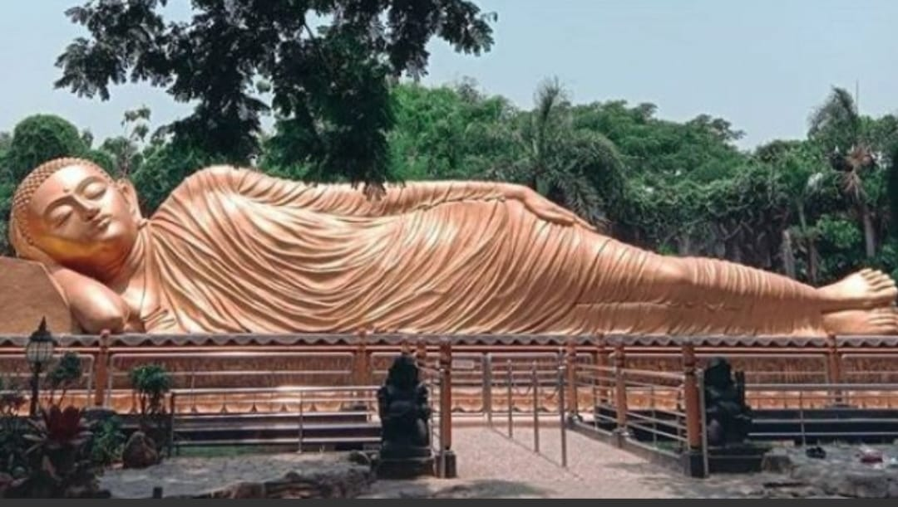
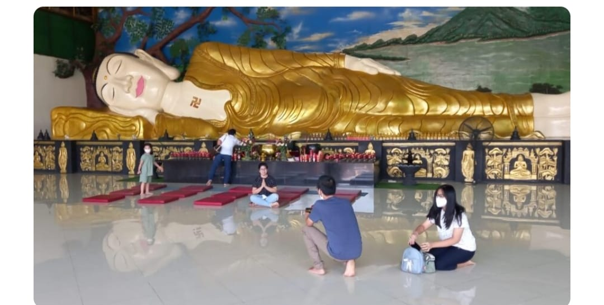

Welcome to the Zhen Qi Page
Zhen Qi
Pengantar Metode Zhen Qi
Pada prinsipnya group ini adalah kepajangan dari PHS saya melengkapi, jadi semua metode yg diajarkan semuanya baik, utk kebutuhan tiap personil pertimbangkan sendiri, kami hanya sebagian dari PHS, tidak perlu bandingkan metode yg mana yg terbaik prinsip semuanya baik dan sangat berguna, banyak kesembuhan dgn metode Wim Hof, Jon Kabbat-Zinn, atau olah nafas ritme, atau metode lain, tolong dalam room itu jangan membedabedakan dgn yg lain, kita fokus di Zhen Qi kalau di lihat testimoni nya luar biasa yg sembuh dgn metode ini saya juga alami, dan lihat banyak keajaiban disini, pakai tongkat di buang tongkatnya ada yg kursi roda kursinya tdk terpakai lagi, ada sembuh dari sirosis, autoimun dll.
Ketentuan Awal untuk Belajar Metode Zhen Qi
Tapi sebelum latihan kita sepakati dulu, ketentuan awal, biasa di pengajaran kita lakukan selama 14 hari utk mencapai Dung Kwan dgn syarat sbb:
- Selama 14 hari ini jangan bekerja yg berat berat yg memakan energi karena metode ini kita akan menghimpun energi.
- Banyak istirahat dan tidur cukup.
- Jangan olah raga berat yg memakan banyak energi.
- Jangan makan yg panas panas terutama daging merah biasa dari hewan berkaki 4 dan ikan yg tidak bersisik seperti lelet, belut dll, juga buah yg panas, Semangka, Melon dan sejenisnya, untuk bumbu bawang merah dan putih boleh, tapi kalau khusus bawang putih dan merah dikonsumsi panas sebaiknya dihindarkan dahulu, kal utk bumbu kan kecil sekali.
- Jangan minum yg dingin dingin es batu, es cream dll.
- Sementara jangan hubungan suami istri sebelum Dung Kwan.
- Banyak minum air putih setelah latihan.
Ini syarat utama yg perlu kita sepakati terlebih dahulu.
Terimakasih saya dan pak Darmoyo atas nama yayasan Zhen Qi Indonesia berterimakasih kami bisa berbagi pengetahuan yg kami dapat utk membantu banyak org, semoga yg kami berikan bisa ber manfaat utk bpk dan ibu sekalian, jadi seperti pengenalan awal saya bersama pak Jarot, yayasan ini resmi terdaftar dan saat didirikan berada langsung dari yayasan Zhen Qi yg ada di China dan disana pun resmi diakui sbg pusaka negara dan SDH menerima berbagai perhargaan , saat prof Dr dr Lie Shao Bo masih hidup , kami juga tidak bandingkan dgn yg lain yg juga mengajarkan Zhen Qi ada yg di inovasi dgn pengalaman pribadi , holistik dll prinsip , semuanya baik , ada yg bisa 5 hari, 7 hari ,dll kami tetap berprinsip dari pengalaman dan pengajaran awal Zhen Qi utk Dung Kwan biasanya 14 hari jika berlatih 4 jam perhari jadi sekitar 50 - 60 jam tapi tiap individu berbeda ada yg bisa lbh cepat ada yg lbh lambat.
Sebelum zoom awal saya kirim pengenalan awal saya di PHS bersama BPK Jarot
Mengenal Zhen Qi - Yohanes H - Host Dr. Ir. Jarot Wijanarko M.Pd
Banyak kisah2 kesembuhan melalui Meditasi Zhen Qi, yang ditemukan oleh Prof Dr dr Li Shao Bo dari China. Sesi ini adalah mengenal sejarah Zhen Qi masuk indonesia dan mengenal Apa dan Prinsip Zhen Qi, oleh Pak Yohanes. Simak selengkapnya dalam rekaman webinar ini. Catatan: Pola Hidup Sehat tidak mengajarkan Zhen Qi di dalam kurikulum atau modul2nya, yang lebih menekankan OLAH NAFAS dari WIM HOFF dan JON KABBAT-ZINN. Karena itu. nformasi lebih lanjut mengenai Chen Zi, silahkan hubungi Pak Yohanes: +62 811-309-271 (tinggal di Surabaya) Tx Jarot Wijanarko Pola Hidup Sehat
Posisi duduk , punggung lurus ,mata terpejam , pandangan lurus kedepan , suasana hening , tangan terbuka bisa hadap bawah atau hadap ke atas , kaki harus beralas kaki , sebaiknya karet agar Qi tidak bocor ke ground / tanah .lidah di tekuk keatas ke langit langit rongga mulut

Lihat gambar posisi lidah ditaruh di langit langit rongga mulut
Ini sebelum zoom saya kasih pendahuluan , syarat, posisi duduk , cari kursi yg nyaman utk ber meditasi ,tidak terlalu tinggi dan tidak terlalu rendah , jangan bersandar.
Jadi ini berbeda dgn prinsip grounding terapi yg jalan tanpa alas kaki di tanah ,atau batu atau rumput yg basah , utk menghindari energi turun ke kaki agar terus berputar ke belakang .kalau duduk bersila sebaiknya pakai matras /alas tidak duduk langsung di lantai.
Prinsip nya dalam Zhen Qi yg diolah adalah Qi itu artinya energi ,di buku kaisar kuning diartikan dgn hawa murni , jadi seperti pengajaran bela diri China pada umumnya energi Ter besar itu adanya bersamaan dgn nafas buang , di bela diri saat memukul itu pada saat buang nafas ,kita bernafas natural hisap dari hidung buang melalui hidung , tidak perlu di buat buat dgn tarik dan buang nafas panjang atau pendek ,dan tidak bisa kita hitung seperti nafas ritme karena tiap org ada bawaan ritme yg ber beda beda , ilmu ini sederhana dan bersifat alami , ada yg mengajarkan nafas jadi pelan seakan akan ditelan kembali atau dgn kapas atau benang tidak boleh bergetar kami tidak ajarkan demikian ,nafas biasa yg wajar saja, kita mulai menghayati aliran nafas kita tarik nafas dan buang nafas , dgn mata terpejam kita lebih bisa menghayati ritme nafas kita , hayati dan rasakan nafas kita masing masing ,tarik nafas dan buang nafas secara alami jangan di buat buat dgn tarik dan buang nafas yg tidak normal. Setelah kita bisa hayati tarik nafas dan buang nafas , sekarang nafas buang itu adalah energi ,kita berusaha himpun energi itu di tandien tengah , CHUNG TANDIEN yg letaknya di ulu hati , terus hayati arahkan konsentrasi kita pada titik akupuntur itu , hingga nantinya terasa hangat / panas atau penuh , letak Chung tandien ada didada tengah ada tulang yg agak menonjol , terus lakukan, belajar meditasi perlu tahap demi tahap ,tidak mungkin awal bermeditasi hingga 1 jam langsung , belajar dari 10 menit istirahat sebentar tambah jadi 15 menit ber angsur angsur hingga kuat bermeditasi hingga 1 jam memang butuh waktu dan keseriusan dan tekun ,sabar dan telaten.
Ini tempat ulu hati yg dimaksud
Musuh dari meditasi adalah pelanturan ,termasuk nglamun , pikiran yg kurang tenang untuk itu bersamaan dgn ritme nafas kita bisa dgn hitungan seperti org gerak jalan , atau seperti webinar saya diatas Krn saya ajarkan untuk lintas agama ,boleh kita hayati ritme nafas itu dalam hati kita imbangi dgn kepercayaan kita , seperti halnya di pengajaran meditasi kristiani , sambil bernafas kita batin kata MARANATHA yg artinya Tuhan datanglah, Yang muslim Boleh dgn Allah hu Akbar ,Yg artinya Tuhan maha besar , yg Budha boleh dgn Amitaba , atau kata lain yg fungsinya menghilangkan atau menghindari pelanturan , yg penting terus lakukan himpun energi terus melalui nafas buang terus himpun di tandien tengah tepatnya di Chung Tandien. PROSES INI DI Zhen Qi DIsebut dgn tahap 1 himpun energi di tandien tengah hingga penuh. ini otomatis masih nafas dada seperti dilakukan manusia pada umum nya.
Utk tahap 1 ini lakukan terus menerus kalau bisa akumulasi waktu minimal 4 jam per hari misal pagi 2 jam dan malam 2 jam biasa kita di pelatihan dari jam 6 hingga pkl 10 malam tiap istirahat minum air putih dan relaksasi.
PRINSIP TAHAP 1 INI BIASA KESULITAN BGMN MENGHIMPUN ENERGI KE ULU HATI ? Pusatkan konsentrasi saat buang nafas pada tandien tengah itu , saat buang nafas konsentrasi arahkan Qi pada Chung tandien . Hayati terus sampai bisa merasakan bahwa yg kita olah itu bukanlah nafas nya tapi yg kita himpun ada Qi bersamaan dgn nafas buang itu adalah Qi yg terbesar.
Lakukan dulu tahap 1 ini besok sore dan lusa group saya buka 2 arah khusus utk tanya jawab tahap 1 ini sementara saya lagi susun pelajaran lewat zoom .Krn butuh kapasitas besar kami hanya ada fasilitas zoom utk 100 org.
MASALAH DAN KESULITAN TAHAP 1
Biasanya yg kami hadapi pada tahap 1 ini adalah , biasanya para pemula meditasi sulit , konsentrasi pada nafas buang dgn konsentrasi atau perhatian pada tandien tengah / Chung tandien jadi yg masuk disana kita hayati bukan lah nafas nya atau udaranya yg di pengajaran lain dibilang ditelan kembali , tapi hayati lah disana ada Qi / Energi di buku kaisar kuning dibilang hawa murni , dan energi itu nantinya kalau bersirkulasi otomatis aliran darah lancar dan oksigen dalam tubuh akan bertambah tinggi , kalau ada alat oksimeter bisa di coba sebelum kita latihan berapa saturasi oksigen dalam darah dan setelah latihan seharusnya naik usahakan diatas 96 kal bisa minimal 97 dgn oksigen dalam darah naik otomatis PH darah akan naik , imunitas kita akan bertambah juga . Lakukan tahap 1 ini dgn tekun ,sabar dan telaten , kalau ada sensasi yg timbul jangan takut , jangan berhalusinasi itu adalah reaksi dari tubuh kita sendiri biasa pusing, gliyeng , kadang kesemutan , terasa ada yg bergerak merambat tidak perlu dicari sensasi akan timbul dgn sendiri nya , ada yg badan miring kekanan atau kiri bahkan ada yg ber putar putar , jangan takut terus himpun energi hingga penuh dalam Chung tandien itu.
Pengajaran Zhen Qi Yun Xing ini prinsipnya sederhana dan natural kuncinya tekun ,tapi hasilnya luar biasa dan sensasi dapat dirasakan dari tahap demi tahap , utk awal lakukan tahap demi tahap dari 10-15 menit terus berangsur naik yg penting terus hayati nafas buang melalui hidung arahkan konsentrasi pikiran kearah Chung tandien , terus berusaha sampai betul betul bisa merasakan Qi yg kita himpun itu , pada saat buang nafas perhatian ,/ konsentrasi terus pada Chung tandien.
Ada yg mengajarkan nafas ditelan kembali, ada yg nafas sepelan mungkin mungkin sampai kapas atau benang tidak bergerak sementara abaikan itu membuat konsentrasi kita terpecah ,nafas natural biasa seperti yg biasa anda lakukan dgn ritme masing masing ,yang penting konsentrasi ke Chung tandien dan hayati Qi kita bersama dgn nafas buang disana ada energi lama kelamaan kita bisa merasakan Qi yg terus kita himpun itu.
Untuk BPK dan ibu yg keadaan tidak bisa duduk Krn kondisi ,kalau terpaksa harus tidur , tidurlah dgn posisi Budha tidur agar tulang punggung tetap bebas Krn Qi akan mengalir kesana.
Posisi Budha tidur Ini hanya khusus mereka yg bermasalah
Posisi Budha tidur Ini hanya khusus mereka yg bermasalah
Ada pertanyaan utk lidah ditekuk keatas otomatis keluar banyak air liur , kalau penuh telan saja air liur lalu kembali lagi pada posisi lidah ditekuk di langit langit rongga mulut.Sementara konsentrasi tetap pada tandien tengah Chung tandien yang terletak di ulu hati
Terimakasih utk melengkapi pada tahap 1 ini meredian yg kita kuatkan dgn Qi kita adalah meredian jantung terus kita himpun terus nanti terus ke meredian berikutnya meredian lambung dan seperti manusia pada umumnya nafas ya nafas dada dgn latihan tahap berikutnya kita ajan berlatih dgn tidak sadar nantinya dari nafas dada kearah nafas perut atau biasa dikenal nafas membran ,lakukan dulu tahap 1 biar tidak bingung berikutnya akan kita arahkan ke tahap berikut nya.
Pagi bpk ibu, utk melengkapi pengajaran tahap 1 ini saya menambahkan andaikata anda mengalami sensasi sering terjadi seperti orang detok janganlah heran Seperti kencing berbau. BAB berbau juga kadang warna berbeda bisa hitam ,hijau atau lainnya. Keringat kadang berbau. Kadang gatal gatal dimana mana.
SENSASI PALING SERING DIHADAPI
- Kesemutan. kadang terasa seperti binatang merambat .
- Kencing berbau
- BAB berbau Keringat berbau .
- Gatal gatal
- Pusing ,gliyeng.
- Kadang badan berputar atau miring kekanan atau kekiri.
- Kadang badan , merasa hangat /panas ..
Utk berhasil meditasi usahakan pikiran bebas dari hal hal yg mengganggu konsentrasi anda Kecemasan , Ketakutan , Masalah keluarga ,Dalam meditasi bukannya mengosongkan pikiran , tapi pikiran atau perhatian tetap pada nafas buang pada tahap 1 ini arah konsentrasi atau pikiran anda pada tandien tengah di ULU HATI di Chung tandien.
Lakukan proses yg sederhana itu , dgn tenang jangan berpikir macam macam dan jangan cari sensasi yg dialami org lain ,anda akan merasakan sendiri , istilah saya terus pompa energi sebanyak banyak melalui tandien tengah itu.
Siang bpk ,ibu , saya pagi ini SDH komunikasi dgn pak Jarot ,kita dapat pakai zoom meeting Selasa tgl 4 April jam 7 hingga jam 10 malam , sementara pengajaran saya melalui text kurang jelas khusus sore nanti saya bersama pak Darmoyo siap kan waktu tanya jawab seputar tahap 1 tolong jangan tanya diluar itu , jadi sikap duduk, dan pengajaran tahap 1 Krn peserta banyak dan banyak yg mau masuk juga ,nantinya saya akan seleksi tiap 10 hari saya terus naikkan ke tahap 2 utk yg bisa ke tahap 2 sementara yg belum bisa ke tahap 2 terus saya tinggal di group ini jadi yg lanjut akan saya pindah ke group selanjut nya, berikut seterusnya jadi ini group ini terus yg awal.
SORE BAPAK IBU UTK JADWAL ZOOM SELASA 4 APRIL PKL 1900- 22.00 PHS is inviting you to a scheduled Zoom meeting. Topic: Olah Nafas Zhen Qi - Bpk Yohanes Join Zoom Meeting https://us02web.zoom.us/j/82547454594?pwd=VTlEbmhDTXRMbzlGUVRWM2pCbEtoUT09 Meeting ID: 825 4745 4594 Passcode: OlahNafasJOIN ZOOM KLIK DISINI
Sekian dan terimakasih